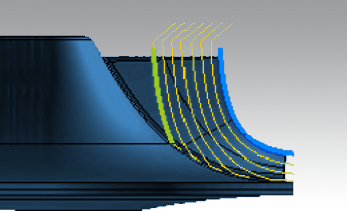
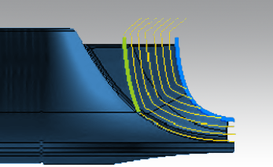
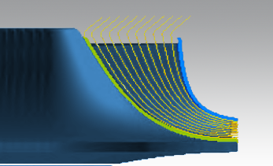
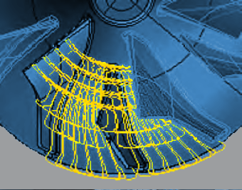
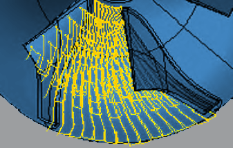
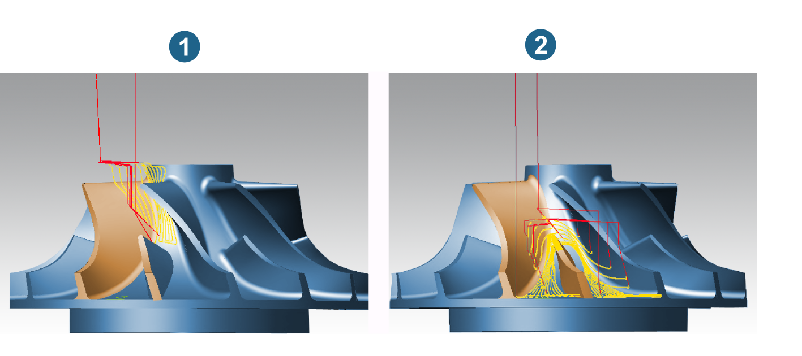
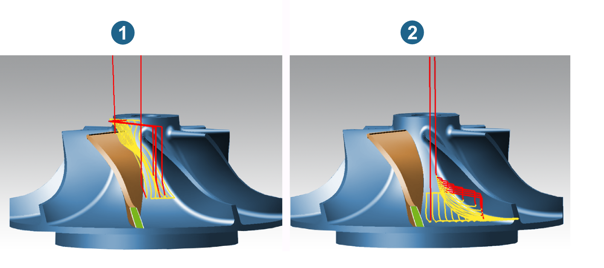
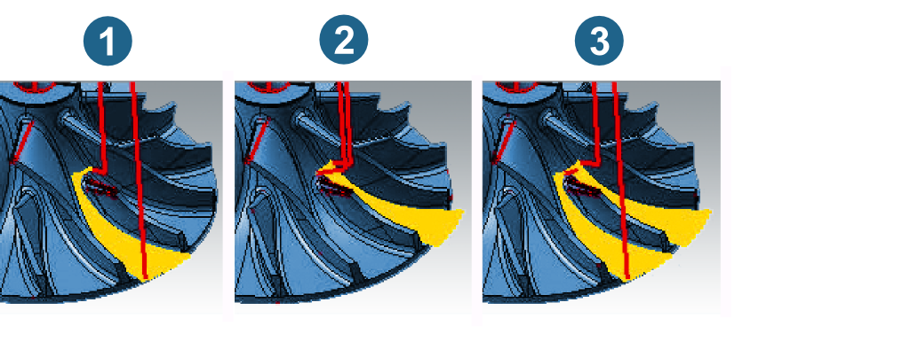

MB Roughing
Strategy
Roughing occurs pocket-by-pocket between the main blades. Different roughing strategies optimize path distribution, tool inclination and the tool length for the machining task.
The same applies to the adjustment of the feedrates an area at a time and to several other detail features.
By performing various roughing jobs in succession, you can make the best, reliable use of the most robust possible tools in each case. This consequently optimizes machining time as well.
Milling strategy
The selected milling strategy determines the tool inclination and the axial path distribution.
Hub offset:The tool inclination is based on the information about the hub’s vectors. The cut division is calculated as an offset starting from the hub.The cut division is calculated as an offset starting from the hub.
 |
Shroud offset (first path): The cut division is calculated as an offset to the shroud starting from the first path. The paths are trimmed against the hub surface and extended on this surface to the next-highest path.
|  |
Shroud offset (final path): The cut division is calculated as an offset starting from the last path. The cut division is calculated from the shroud offset trimmed on the hub surface.
|  |
Flow: In this strategy, the depth infeed method is the same as with the Blade Point Milling flow option.
As roughing can be an exact pre-machining of a subsequent finishing operation, this strategy is particularly useful for machining blisks where alternating roughing and finishing is required in several operations.
|  |
Infeed strategy
The infeed always moves fluidly between the main blades. The path profile follows the fluid flow. Machining is always performed using climb milling.
Flow zigzag: Machining with alternating cutting direction between the two main blades.
 |
Flow oneway: Machining with the same cutting direction between two main blades.
|  |
Flow zigzag next: In contrast to Flow zigzag, where the upwards and downwards paths of a pocket are connected with one another from the inside out in a spiral shape, here a link is made to the next direct path in a meander shape.
Advantage: Less movement of the rotary axes and therefore of the linear axes.
Offset pocket: Pocket-shaped material removal between the blades taking into account the offset values ( hub surface/ shroud surface) defined on the Parameters tab. The offset takes place along the outer contour of the pocket, as automatically determined by hyperMILL.
This ensures that no remaining material is left in the area on the leading side, which may cause a tool collision during subsequent machining on the trailing side when using the Offset pocket infeed strategy.
|  |
Entry position
Leading side / Trailing side: You can machine either on the leading (1) or trailing edge (2). With a constant machining direction, the entry position is generally dependent on the best possible lead angle.
 |
Edge rolling
Edge rolling achieves a uniform allowance on the main blade’s edges.
Example of use: (1) → , (2) → , (3) → . The latter is the preferred option for ‘blunt’ geometry of the edge. Here, the toolpath is extended tangentially.
Note
When the Pocket split function is activated, edge rolling can only take place for the edge of the main blade at the entry position. Therefore, only the edge for which edge rolling must be defined is displayed in the user interface.
Pocket split
When machining pockets between the blades, narrower areas can be machined with a smaller tool, while wider areas are machined with a larger tool.
This type of pocket split results in significantly shorter machining time and increases the efficiency of machining.
Note
For impellers with a splitter blade, hyperMILL specifies the Z value for the delimitation between the upper and lower area automatically based on the size of the splitter blade. The remaining area above the splitter blade is machined with a larger tool, while the two smaller areas between the main and splitter blade are machined with a smaller tool.
Pocket split: Impeller with splitter blade. (1) Leading side: Machining with larger tool. (2) Trailing side: Machining with smaller tool.
|  |
Note
For impellers without a splitter blade, use the Split Z value to specify where the pocket should be divided into an upper (leading side) and lower (trailing side) part.
Pocket split: Impeller without splitter blade. (1) Leading side: Machining with smaller tool. (2) Trailing side: Machining with larger tool.
|  |
The following machining options are available for the pocket split.
Off: No pocket split takes place. Both the leading and trailing sides are machined. If a splitter blade is defined, machining takes place both above the splitter blades (leading side) as well as between the main and splitter blade (trailing side).
Only lead: Only the area of the leading side will be machined. If a splitter blade is defined, machining takes place above the splitter blade. The area to be machined is calculated by hyperMILL automatically based on the position of the splitter blade.
Trailing edge complete: Only the area of the trailing side will be machined. If a splitter blade is defined, machining takes place between the main and splitter blade. The area to be machined is calculated by hyperMILL automatically based on the position of the splitter blade.
Warning
The Trailing edge complete function can be used in combination with the Offset pocket machining strategy only if roughing has already taken place on the Leading side. This is because the Offset pocket strategy approaches from both the leading and trailing side, and would otherwise result in a collision risk!
Split Z value: This option is only available if no splitter blade is defined. This specifies, depending on the defined job frame, the z-height for the pocket split in an area to be machined and an unmachined area.
Warning
In the case of changes to the frame, the Split Z value must be adjusted appropriately.
If on the trailing side the splitter blade features pockets of varying sizes to the left and right, they can be separately machined with the functions Trailing edge left and Trailing edge right and with tools of different sizes. This reduces the machining time.
(1) Trailing edge left, (2) Trailing edge right, (3) Trailing edge complete.
|  |
Special options
Opening cuts only: As a preparatory measure for the subsequent finishing operation, hyperMILL just makes opening cuts without clearing the pocket laterally if this option is enabled.
The axial infeed for the opening cuts is defined on the Parameters tab.
Skip last path: If machining of paths near the blades takes place followed by finishing machining (requirement: blade and tool are stable enough), this option skips the last machining path (near the blade), thus reducing the machining time by the corresponding amount.